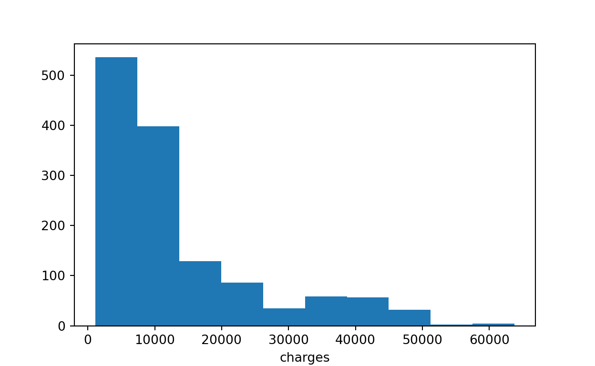

A linear regression project.
In order to make money, insurance needs to raise more annual premiums than to spend on beneficiaries’ medical services. Therefore, insurance companies have invested a lot of time and money in developing models that can accurately predict medical expenses.
It is difficult to estimate the cost of medical care because the highest cost is rare and seems to be random. However, some situations are still more common for specific groups. For example, smokers are more likely to get lung cancer than non-smokers, and obese people are more likely to get heart disease.
The purpose of this analysis is to use patient data to predict the average medical expenses of this group. These estimates can be used to create an actuarial table to set whether the annual premium price is higher or lower according to the expected cost of treatment.
In order to facilitate analysis, we use an analogue data set that includes the medical expenses of American patients. Insurance.csv, which is based on the demographic data of the U.S. Census Bureau, contains 1,338 cases, that is, the beneficiaries of insurance plans that have been registered so far and the total medical treatment that shows the characteristics of patients and the plans over the years. The characteristics of the cost. These characteristics are:
age: this is an integer indicating the age of the main beneficiary (excluding people over 64 years old, because they are generally paid by the government).
sex: this is the gender of the policyholder, either male or female.
bmi: this is the Body Mass Index (BMI), which provides a way to judge whether a person’s weight is too heavy or light relative to his height. The BMI index is equal to the square of the weight (kg) divided by the height (metre).
children: this is an integer that represents the number of children/dependents included in the insurance plan.
smoker: judge yes or no according to whether the insured smokes.
region: according to the beneficiary’s residence in the United States, it is divided into 4 geographical areas: northeast、southeastern、southwest and northwest.
How to link these variables to the settled medical expenses is very important. For example, we may consider the elderly and smokers at higher risk of large medical expenses. Unlike many other machine learning methods, in regression analysis, the relationship between characteristics is usually specified by the user rather than automatically detected. In the next section, we will discuss some of the potential relationships.
First, use the read_csv() function of pandas to read the data.
import pandas as pd
import numpy as np
import matplotlib.pyplot as plt
insurance = pd.read_csv("dataset/insurance.csv")
insurance.head(10) age sex bmi children smoker region charges
0 19 female 27.900 0 yes southwest 16884.92400
1 18 male 33.770 1 no southeast 1725.55230
2 28 male 33.000 3 no southeast 4449.46200
3 33 male 22.705 0 no northwest 21984.47061
4 32 male 28.880 0 no northwest 3866.85520
5 31 female 25.740 0 no southeast 3756.62160
6 46 female 33.440 1 no southeast 8240.58960
7 37 female 27.740 3 no northwest 7281.50560
8 37 male 29.830 2 no northeast 6406.41070
9 60 female 25.840 0 no northwest 28923.13692Since the dependent variable is charges, let’s take a look at how it is distributed:
insurance["charges"].describe()count 1338.000000
mean 13270.422265
std 12110.011237
min 1121.873900
25% 4740.287150
50% 9382.033000
75% 16639.912515
max 63770.428010
Name: charges, dtype: float64Because the average is much higher than the median, it shows that the distribution of insurance costs is right-deflected. We can use an intuitive histogram to prove this, and we can draw a histogram with the hist() function in the pylab module.
import pylab as pl
pl.hist(insurance["charges"])
pl.xlabel('charges')
pl.show()
In our data, the vast majority of individuals spend between \$0 and \$15,000 per year, although the tail of the distribution extends far after the peak of the histogram. Because linear regression assumes that the distribution of dependent variables is a normal distribution, this distribution is not ideal. In practical applications, the assumption of linear regression is often violated. If necessary, we can correct the hypothesis later.
Another problem to be faced is that the regression model requires every feature to be numerical, and in our data, we have 3 non-numeric features.
The variable sex is divided into two levels: male and female, while the variable smoker is divided into two levels: yes and no. From the output of describe(), we know that the variable region has 4 levels, but we need to take a closer look at how they are distributed.
insurance["sex"].describe()count 1338
unique 2
top male
freq 676
Name: sex, dtype: objectinsurance["smoker"].describe()count 1338
unique 2
top no
freq 1064
Name: smoker, dtype: objectinsurance["region"].describe()count 1338
unique 4
top southeast
freq 364
Name: region, dtype: objectinsurance.region.value_counts()region
southeast 364
southwest 325
northwest 325
northeast 324
Name: count, dtype: int64Here, we see that the data is almost evenly distributed in 4 geographical areas.
Before using the regression model to fit the data, it is necessary to determine how the relationship between independent variables and dependent variables and between independent variables is. The correlation matrix provides a quick overview of these relationships. Given a set of variables, it can provide a correlation coefficient for the relationship between each pair of variables.
To create a correlation coefficient matrix for 4 numerical variables in insurance, you can use the corr() command:
insurance[["age","bmi","children","charges"]].corr() age bmi children charges
age 1.000000 0.109272 0.042469 0.299008
bmi 0.109272 1.000000 0.012759 0.198341
children 0.042469 0.012759 1.000000 0.067998
charges 0.299008 0.198341 0.067998 1.000000At the intersection of each row and column, the listed correlation coefficient represents the correlation coefficient between the row where it is located and the two variables in the column where it is located. The diagonal is always 1, because a variable is always completely related to itself. Because the correlation is symmetrical, in other words, corr(x,y) = corr(y,x), the value above the diagonal is the same as the value below it.
The correlation coefficient in the matrix is not strongly correlated, but there are still some significant correlations. For example, age and bmi show a moderate correlation, which means that body mass index (bmi) will also increase with age. In addition, age and charges, bmi and charges, and children and charges also show moderate correlation. When we establish the final regression model, we will try to sort out these relationships more clearly.
To fit a linear regression model with data with Python, you can use the function LinearRegression() in the linear model class linear_model of the sklearn package.
Before that, we noticed that the three variables sex, smoker and region are all categorical variables, not numerical.
The linear regression function lm() in the R language can automatically apply a technique called dummy coding to the variables of each factor type contained in the model. Virtual coding allows nominal features to be processed into numerical variables by creating a binary variable for each class of a feature, that is, if the observation value belongs to a certain category, it is set to 1, otherwise it is set to 0. For example, there are two types of sex variables: male and female. This will be divided into two binary variables, which are named sexmale and sexfemale in R. For the observed value, if sex=male, then sexmale=1, sexfemale=0; if sex=female, then sexmale=0, sexfemale=1. The same code is applicable to variables with 3 or even more categories. The characteristic region with 4 categories can be divided into 4 variables: regionnorthwest, regionsoutheast, regionsouthwest, region Nnortheast. When adding a virtually encoded variable to the regression model, a category is always excluded as a reference category. Then, the estimated coefficient is explained relative to the reference category. The above ideas are our common methods of dealing with qualitative factors. It can help us quantify qualitative variables, which has achieved the purpose that qualitative factors can have the same role as quantitative factors.
In Python language, it seems that there is no ready-made regression function to directly realise virtual variable regression. Therefore, we need to virtually code the above three category variables first, and define the function dummycoding() as follows.
def dummycoding(dataframe):
dataframe_age = dataframe['age']
dataframe_bmi = dataframe['bmi']
dataframe_children = dataframe['children']
dataframe_charges = dataframe['charges']
dataframe_1 = dataframe.drop(['age'], axis = 1)
dataframe_2 = dataframe_1.drop(['bmi'], axis = 1)
dataframe_3 = dataframe_2.drop(['children'], axis = 1)
dataframe_new = dataframe_3.drop(['charges'], axis = 1)
dataframe_new=pd.get_dummies(dataframe_new, prefix = dataframe_new.columns).astype(int)
dataframe_new['age'] = dataframe_age
dataframe_new['bmi'] = dataframe_bmi
dataframe_new['children'] = dataframe_children
dataframe_new['charges'] = dataframe_charges
return dataframe_new
insurance_lm=dummycoding(insurance)
insurance_lm.head(10) sex_female sex_male smoker_no ... bmi children charges
0 1 0 0 ... 27.900 0 16884.92400
1 0 1 1 ... 33.770 1 1725.55230
2 0 1 1 ... 33.000 3 4449.46200
3 0 1 1 ... 22.705 0 21984.47061
4 0 1 1 ... 28.880 0 3866.85520
5 1 0 1 ... 25.740 0 3756.62160
6 1 0 1 ... 33.440 1 8240.58960
7 1 0 1 ... 27.740 3 7281.50560
8 0 1 1 ... 29.830 2 6406.41070
9 1 0 1 ... 25.840 0 28923.13692
[10 rows x 12 columns]As shown in the table above, we have completed the virtual encoding of the type variables in insurance. Then keep the sex_female, smoker_no and region_northeast variables in the regression model, so that female non-smokers in the northeast region are used as a reference group.
from sklearn import linear_model
insurance_lm_y = insurance_lm['charges']
insurance_lm_X1 = insurance_lm.drop(['charges'], axis = 1)
insurance_lm_X2 = insurance_lm_X1.drop(['sex_female'], axis = 1)
insurance_lm_X3 = insurance_lm_X2.drop(['smoker_no'], axis = 1)
insurance_lm_X = insurance_lm_X3.drop(['region_northeast'], axis = 1)insurance_lm_X.head(10) sex_male smoker_yes region_northwest ... age bmi children
0 0 1 0 ... 19 27.900 0
1 1 0 0 ... 18 33.770 1
2 1 0 0 ... 28 33.000 3
3 1 0 1 ... 33 22.705 0
4 1 0 1 ... 32 28.880 0
5 0 0 0 ... 31 25.740 0
6 0 0 0 ... 46 33.440 1
7 0 0 1 ... 37 27.740 3
8 1 0 0 ... 37 29.830 2
9 0 0 1 ... 60 25.840 0
[10 rows x 8 columns]insurance_lm_y.head(10)0 16884.92400
1 1725.55230
2 4449.46200
3 21984.47061
4 3866.85520
5 3756.62160
6 8240.58960
7 7281.50560
8 6406.41070
9 28923.13692
Name: charges, dtype: float64regr = linear_model.LinearRegression()
regr.fit(insurance_lm_X, insurance_lm_y)LinearRegression()In a Jupyter environment, please rerun this cell to show the HTML representation or trust the notebook.
LinearRegression()
print('Intercept: %.2f'
% regr.intercept_)Intercept: -11938.54print('Coefficients: ')Coefficients: print(regr.coef_)[ -131.3143594 23848.53454191 -352.96389942 -1035.02204939
-960.0509913 256.85635254 339.19345361 475.50054515]print('Residual sum of squares: %.2f'
% np.mean((regr.predict(insurance_lm_X) - insurance_lm_y) ** 2))Residual sum of squares: 36501893.01print('Variance score: %.2f' % regr.score(insurance_lm_X, insurance_lm_y))Variance score: 0.75It is quite simple to understand the regression coefficient. The intercept tells us the value of charges when the values of the independent variables are all equal to 0.
As in the case here, the intercept is often difficult to explain, because it is impossible to make the value of all features 0. For example, because no one’s age and BMI are valued as 0, all intercepts have no intrinsic meaning. For this reason, intercepts are often ignored in practice.
When other features remain unchanged, the β coefficient of a feature indicates the increase in charges for each additional unit of the feature. For example, as the age increases each year, assuming that everything else remains the same (unchanged), we will expect an average increase of \$256.90 in medical expenses. Similarly, for each additional child, an average of \$475.50 per year will incur additional medical expenses; while for every unit of BMI, the annual medical expenses will increase by \$339.20.
Compared with women, men spend \$131.30 less on medical care per year; smokers spend an average of $2,3,848.50 more than non-smokers. In addition, the coefficients of the other three regions in the model are negative, which means that the Northeast tends to have the highest average medical expenses.
The results in the linear regression model are logical. Old age, smoking and obesity are often associated with other health problems, and additional family members or dependants may lead to an increase in the number of visits and the cost of preventive health care (such as vaccination and annual physical examination). However, we do not know how well the model fits the data well. We will discuss this issue in the next section.
Readers can know from the comparison with the R version of the same case that the result output of the lm() function in R is more perfect in terms of evaluating the performance of the model. When constructing linear regression with scikit-learn, many performance indicators cannot be viewed directly, because sklearn is a machine learning library rather than a statistical library. Interested readers can try to define the relevant performance indicator functions by themselves. Since various performance indicators have been analysed in the R version, we will not repeat them here.
As mentioned earlier, a key difference between regression models and other machine learning methods is that regression usually allows users to choose features and set models. Therefore, if we have disciplinary knowledge about how a feature is related to the result, we can use this information to set the model and possibly improve the performance of the model.
In linear regression, the relationship between independent variables and dependent variables is hypothesised to be linear, but this is not necessarily correct. For example, for all age values, the impact of age on medical expenses may not be constant; for the oldest population, treatment may be too expensive.
If you still remember, a typical regression equation follows the following similar form: y=α+β1x
Considering the nonlinear relationship, a higher-order term can be added to the regression model and treated as a polynomial. In fact, we will establish a relationship model as follows: y=α+β1x+β2x2
The difference between the two models is that a separate β2 will be estimated for the purpose of capturing the effect of the x2 term, which allows the influence of age to be measured through a square term of age.
In order to add nonlinear age to the model, we only need to create a new variable:
insurance_lm['age2'] = insurance_lm['age']*insurance_lm['age']
insurance_lm['age2'].head(10)0 361
1 324
2 784
3 1089
4 1024
5 961
6 2116
7 1369
8 1369
9 3600
Name: age2, dtype: int64Then, when we build an improved model, we will add both age and age2 to the regression model.
Suppose we have a premonition that the impact of a feature is not cumulative, but only when the value of the feature reaches a given threshold. For example, for individuals within the normal weight range, the impact of BMI on medical expenses may be 0, but for obese people (i.e. BMI not less than 30), it may be closely related to higher costs.
We can establish this relationship by creating a binary indicator variable, that is, if the BMI is greater than or equal to 30, it is set to 1, otherwise it is set to 0. The β estimate of this binary characteristic represents the average net impact on medical expenses for individuals with a BMI greater than or equal to 30 relative to individuals with a BMI of less than 30.
import warnings
warnings.filterwarnings('ignore', category=pd.errors.SettingWithCopyWarning)
insurance_lm['bmi30'] = 0
for i in range(0, 1338):
if insurance_lm['bmi'][i] >= 30:
insurance_lm.loc[i, 'bmi30'] = 1
else:
insurance_lm.loc[i, 'bmi30'] = 0
insurance_lm['bmi30'].head(10)0 0
1 1
2 1
3 0
4 0
5 0
6 1
7 0
8 0
9 0
Name: bmi30, dtype: int64Then, the variables of bmi30 can be included in the improved model, whether to replace the original bmi variable or supplement it, depending on whether we think that the impact of obesity will also occur in addition to a separate BMI impact. If there is no good reason not to do so, then we will include both in the final model.
If you have difficulty deciding whether to include a variable, a common practice is to include it and test its significance level. Then, if the variable is not statistically significant, then there is evidence to support the exclusion of the variable in the future.
So far, we have only considered the individual impact (contribution) of each feature on the results. If some characteristics have a comprehensive impact on dependent variables, what should we do? For example, smoking and obesity may have harmful effects respectively, but it is reasonable to assume that their joint effects may be worse than each of them alone.
When two characteristics have a common influence, this is called interaction. If you suspect the interaction of two variables, you can test this hypothesis by adding their interaction to the model. You can use the formula syntax in R to specify the impact of the interaction. In order to reflect the interaction between obesity index (bmi30) and smoking index (smoker), bmi30 ∗ smoker_yes can also be put into the model as an independent variable.
Based on a little disciplinary knowledge of how medical expenses are related to the characteristics of patients, we have developed a regression formula that we think is more accurate and specialised. Let’s summarise our improvements:
A nonlinear age term has been added.
Create an indicator for obesity
The interaction between obesity and smoking has been formulated.
We will use regression functions to train the model as before, but this time, we will add newly constructed variables and interaction terms:
insurance_lm['bmi30_smoker']=insurance_lm['bmi30']*insurance_lm['smoker_yes']
insurance_lm.head(15) sex_female sex_male smoker_no ... age2 bmi30 bmi30_smoker
0 1 0 0 ... 361 0 0
1 0 1 1 ... 324 1 0
2 0 1 1 ... 784 1 0
3 0 1 1 ... 1089 0 0
4 0 1 1 ... 1024 0 0
5 1 0 1 ... 961 0 0
6 1 0 1 ... 2116 1 0
7 1 0 1 ... 1369 0 0
8 0 1 1 ... 1369 0 0
9 1 0 1 ... 3600 0 0
10 0 1 1 ... 625 0 0
11 1 0 0 ... 3844 0 0
12 0 1 1 ... 529 1 0
13 1 0 1 ... 3136 1 0
14 0 1 0 ... 729 1 1
[15 rows x 15 columns]insurance_lm_y = insurance_lm['charges']
insurance_lm_X1 = insurance_lm.drop(['charges'], axis = 1)
insurance_lm_X2 = insurance_lm_X1.drop(['sex_female'], axis = 1)
insurance_lm_X3 = insurance_lm_X2.drop(['smoker_no'], axis = 1)
insurance_lm_X = insurance_lm_X3.drop(['region_northeast'], axis = 1)
regr = linear_model.LinearRegression()
regr.fit(insurance_lm_X, insurance_lm_y)LinearRegression()In a Jupyter environment, please rerun this cell to show the HTML representation or trust the notebook.
LinearRegression()
print('Intercept: %.2f'
% regr.intercept_)Intercept: 134.25print('Coefficients: ')Coefficients: print(regr.coef_)[-4.96824457e+02 1.34046866e+04 -2.79203806e+02 -8.28546726e+02
-1.22264365e+03 -3.26851487e+01 1.20019552e+02 6.78561198e+02
3.73157552e+00 -1.00014032e+03 1.98107533e+04]print('Residual sum of squares: %.2f'
% np.mean((regr.predict(insurance_lm_X) - insurance_lm_y) ** 2))Residual sum of squares: 19578928.42print('Variance score: %.2f' % regr.score(insurance_lm_X, insurance_lm_y))Variance score: 0.87Analysing the fitting statistics of the model helps to determine whether our changes improve the performance of the regression model. Compared with our first model, the R square value increased from 0.75 to about 0.87, and our model can now explain 87% of the change in medical expenses. The interaction between obesity and smoking shows a huge impact. In addition to the additional cost of more than \$13,404 in smoking alone, obese smokers spend an additional \$19,810 a year, which may indicate that smoking aggravates (exacerbates) obesity-related diseases.